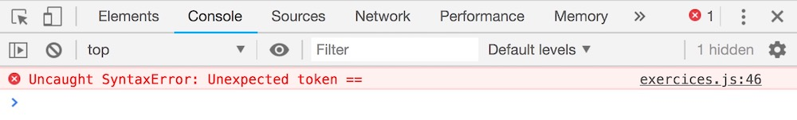
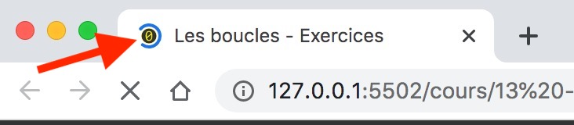

Pour répondre à ces exercices, tapez votre code dans le fichier exercices.js.
Pensez à bien lire l'intégralité de la documentation pour faire les exercices avant de commencer.
Dernier point, lorsque vous trouvez la solution d'un exercice par vous-même, allez tout de même voir la solution que je propose : vous apprendrez peut-être une autre façon de faire plus intéressante !
Il se peut que vous rencontriez certains problèmes techniques pour valider les exercices.
Lisez leur solution au moins une fois avant de commencer les exercices.
Si certains exercices précédemment validés en vert redeviennent gris et "En attente de code à tester" : c'est qu'il y a une erreur de syntaxe dans votre code. Solution : ouvrez la console développeur pour trouver l'erreur.
Sur Windows ou Linux : depuis Chrome, tapez Ctrl + Shift + J ou allez dans le
menu (les 3
petits points verticaux en haut à droite de la fenêtre de Chrome) puis allez dans Plus d'outils > Outils de
développement.
Sur MacOS : depuis Chrome, tapez ⌘ + ⌥ + J (Commande + Option + J) ou bien
allez dans le
menu Afficher > Options pour les développeurs > Console JavaScript.
Le message d'erreur apparaît en rouge et est en anglais, il faudra le traduire. L'erreur vient du fichier
noté sur la droite au numéro de ligne indiqué. Ouvrez ce fichier dans VSCode, rendez-vous à la ligne indiquée
et corrigez l'erreur.

Si la page web ne répond plus (les clics n'ont aucun effet) ou si l'icône dans l'onglet tourne indéfiniment : c'est qu'il y a une boucle infinie dans votre code. Solution : corrigez votre code puis actualisez le site web.
Si vous avez fait une boucle infinie, l'icône de votre onglet va tourner comme ça indéfiniment
:

Voici à quoi peut ressembler une boucle infinie dans du code :
let poidsClient = prochainClient.mesurerPoids();
while (poidsClient !== 0) {
console.log(poidsClient);
}
Le problème ici, c'est que la condition de répétition de la boucle poidsClient !== 0 est
toujours vraie ! En effet, on ne modifie pas la valeur de poidsClient à l'intérieur de la boucle,
par
conséquent celle-ci s'exécutera sans jamais s'arrêter : vous avez fait une boucle infinie !
Voici les étapes à respecter pour se sortir de ce problème :
Arrêter le processus en bas à droite.
Dans les paramètres, je vous conseille d'utiliser l'option onFocusChange pour la sauvegarde
automatique.
En effet, si vous avez l'option afterDelay de sélectionnée, ça veut dire que VSCode va
sauvegarder votre code toutes les X secondes. Le site web va se recharger automatiquement à ce moment là et si
votre code actuel génère une boucle infinie, Chrome va planter !
Pour éviter ce problème, utilisez l'option onFocusChange qui indique à VSCode de sauvegarder
votre fichier seulement si vous changez de fenêtre ou d'onglet. Vous pouvez aussi sauvegarder manuellemment
avec ⌘ + S sur MacOS ou Ctrl + S sur Windows ou Linux quand vous voulez vérifier que
votre code fonctionne.
Si vous souhaitez déboguer votre code, utilisez le débogueur de Chrome comme je l'explique dans cette vidéo.
Si vous êtes bloqué et qu'aucune solution mentionnée ne fonctionne, envoyez-moi un email sur jeremy@javascriptdezero.com en précisant le numéro de la leçon sur laquelle vous travaillez et le numéro de l'exercice qui pose problème.
while, do... while et for.La société SensationsGaranties vient de sortir un nouveau manège nommé Vibrations.
Le sol de ce manège vibre rapidement. Pour ne pas trop solliciter la mécanique sous le manège, on ne fait pas monter trop de clients à la fois lors d'un tour.
Une balance est placée au début de la file d'attente du manège pour mesurer le poids du prochain client qui doit monter sur le manège.
Pour obtenir le poids de ce client, il faut utiliser l'instruction prochainClient.mesurerPoids() qui
va renvoyer le poids sous la forme d'un nombre : par exemple elle va renvoyer la valeur 42 pour un
client qui pèse 42 kg.
Évidemment c'est Tom qui s'y colle une fois de plus !
Dans un premier temps, il veut déjà vérifier que la balance fonctionne bien et décide d'afficher le poids du
premier client sous la forme 42 kg, en rajoutant donc l'unité kg après la valeur du
poids du client.
Il a déjà rédigé du code, aidez-le à le finir !
Vous n'avez pas besoin de boucles pour réaliser ce très simple exercice.
Pour améliorer l'expérience utilisateur, chaque client ne se fait peser qu'une seule fois.
Par conséquent, la 1ère fois que vous utilisez l'instruction
prochainClient.mesurerPoids() sa valeur est égale au poids du 1er client de la file
d'attente.
La 2ème fois que vous utilisez prochainClient.mesurerPoids(), sa valeur est égale au
poids du 2ème client de la file d'attente etc.
Toujours dans le but de vérifier que tout fonctionne bien avec la balance et l'instruction
prochainClient.mesurerPoids(), Tom décide d'utiliser 2 fois de suite cette instruction pour afficher
le poids du 1er et du 2ème client de la file d'attente.
Aidez-le à terminer son code.
Vous n'avez pas besoin de boucles pour réaliser ce très simple exercice.
Super ! À priori tout fonctionne bien avec la balance.
Lorsqu'il n'y a plus de clients dans la file d'attente et qu'on utilise l'instruction
prochainClient.mesurerPoids(), celle-ci renvoie la valeur 0.
Tom va donc maintenant passer à la dernière étape de ses tests. Il veut afficher les poids de tous les clients dans la file d'attente.
Autrement dit, il veut afficher les poids de tous les clients jusqu'à ce que
prochainClient.mesurerPoids() retourne la valeur 0.
Pour ça, il est sûr qu'il faut utiliser une boucle while mais il a du mal à savoir quoi mettre comme
condition de boucle et comme instructions à l'intérieur, il vous demande de l'aide.
La dernière valeur 0 retournée par la balance ne doit pas être
affichée !
Toujours dans le but d'améliorer l'expérience utilisateur, on a placé un écran à l'entrée du chemin de la file d'attente qui doit indiquer combien de temps il faudra patienter avant de passer sur le manège.
Ça permet aux visiteurs de savoir en gros combien de temps ils vont devoir attendre avant de passer sur le manège et de prendre la décision de s'engager dans la file d'attente ou pas.
En fonction de la longueur actuelle de la file d'attente, un prestataire de service externe estime le nombre de tours à patienter avant que le dernier client de la file d'attente passe enfin sur le manège.
Ce prestataire envoie à Tom le nombre de tours restants à effectuer. Par exemple 6.
Chaque tour de manège dure 12 minutes.
Tom récupère le nombre de tours restants à effectuer dans une variable nombreDeTours.
À partir de ces informations il doit afficher le temps d'attente sur l'écran au format 01h42 : 2
chiffres pour les heures et 2 chiffres pour les minutes.
Aidez Tom a finir son code.
C'est bientôt Noël et les dirigeants de SensationsGaranties veulent marquer le coup en affichant des petites guirlandes de Noël de différentes tailles sur les écrans.
Une guirlande de Noël se compose d'une suite d'étoiles.
Tom doit sortir ses talents créatifs de développeur pour réussir à afficher une guirlande de Noël en fonction de
sa longueur. Par exemple pour la longueur 4 il faut faire une guirlande comme celle-ci :
****
Il sait qu'il doit utiliser des boucles for car la longueur des guirlandes lui est communiquée dans
son programme via la variable longueurGuirlande.
Aidez-le à mettre en place sa fonction en utilisant des boucles for.
Utilisez la concaténation de chaînes de caractères avec la variable ligne pour
construire la guirlande.
Les guirlandes avec des étoiles uniquement ne sont pas très jolies. Le directeur de la comm' décide d'ajouter une
fois sur deux des ampoules lumineuses représentées par la lettre minuscule o comme ceci :
*o*o*o*o
Pour réaliser cette amélioration, Tom utilisera des boucles for car la longueur des guirlandes est
communiquée dans le programme via la variable longueurGuirlande.
Aidez-le à mettre en place sa fonction en utilisant des boucles for.
Partez du code de l'exercice précédent. Déclarez une variable symbole qui
prendra alternativement les valeurs * et o à chaque tour de boucle. Utilisez cette
variable pour construire la guirlande.
Tom se dit qu'il pourrait faire des figures en 2D pour améliorer la présentation sur les écrans.
Il aimerait pouvoir afficher un triangle comme celui ci-dessous à partir d'une valeur
largeurTriangle qu'il récupère depuis son code. Par exemple lorsque largeurTriangle vaut
7 il veut afficher :
******* ***** *** *
Pour faciliter les choses, largeurTriangle est toujours une valeur impaire.
Malheureusement son code semble avoir un bogue, pouvez-vous le corriger ?
Attention à ne pas insérer de lignes vides avant ou après votre triangle !
Prenez le temps
de comprendre la logique du code de Tom (ce qu'il a voulu faire) avant d'y apporter des corrections.
Tom se dit qu'il pourrait améliorer l'esthétique de ces triangles...
Il aimerait pouvoir afficher un triangle comme celui-ci pour une valeur de largeurTriangle qui vaut
7 :
* *** ***** ******* ***** *** *
Pour faciliter les choses, largeurTriangle est toujours une valeur impaire.
Malheureusement son code semble avoir un bogue, pouvez-vous le corriger ?
Prenez le temps de comprendre la logique du code de Tom (ce qu'il a voulu faire) avant d'y apporter des corrections.
Place aux choses sérieuses maintenant !
Tom se demande comment le prestataire externe estime combien de tours il reste à faire avant que le dernier client puisse monter dans le manège. Il se pose le challenge de coder un programme pour le calculer.
À chaque tour, plusieurs clients peuvent monter sur le manège.
Comme indiqué dans les spécifications du manège, la somme des poids des clients à chaque tour doit être
inférieure ou égale à 500 kg pour éviter de trop solliciter la mécanique vibrante de celui-ci.
On peut donc faire rentrer des nouveaux clients sur le manège tant qu'on ne dépasse pas cette valeur de
500 kg. Mais si le poids du prochain client fait dépasser les 500 kg, ce client doit
attendre le prochain tour pour passer.
Exemple avec cette file d'attente : 80, 92, 102, 76, 120, 88, 95, 45, 98, 107, 96. On devra attendre
3 tours.
Explications : un premier tour avec les clients 80, 92, 102, 76, 120 (total 470 kg, si on ajoutait le client d'après de 88 kg, on dépasserait les 500 kg donc il attend le prochain tour). Deuxième tour avec 88, 95, 45, 98, 107 (total 433 kg). Et un dernier tour avec le dernier client de 96 kg.
L'objectif de Tom est d'afficher sous la forme 5 tours le nombre de tours total pour faire passer
tous les clients déjà présents dans la file d'attente.
Notez qu'il faudra afficher 0 tour et 1 tour (sans le s final à tour !).
Cet exercice est difficile, prenez votre temps, ne vous découragez pas !